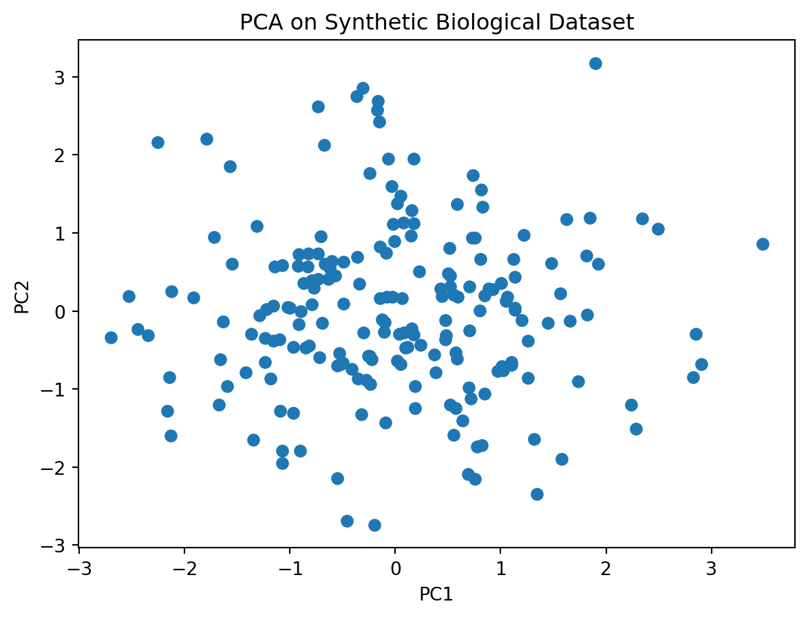
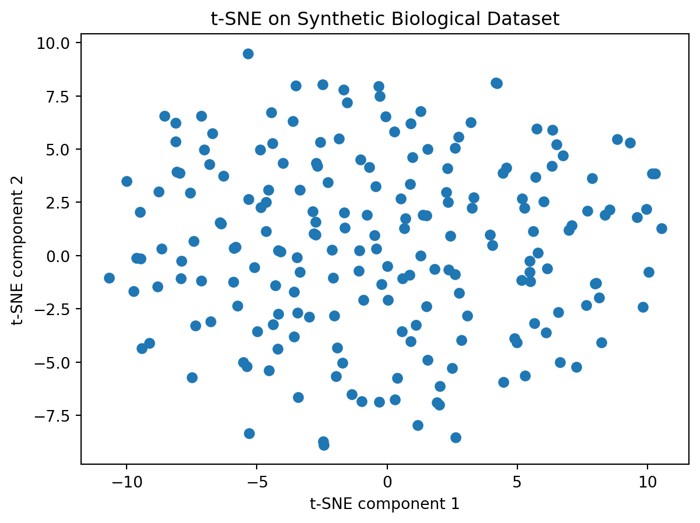
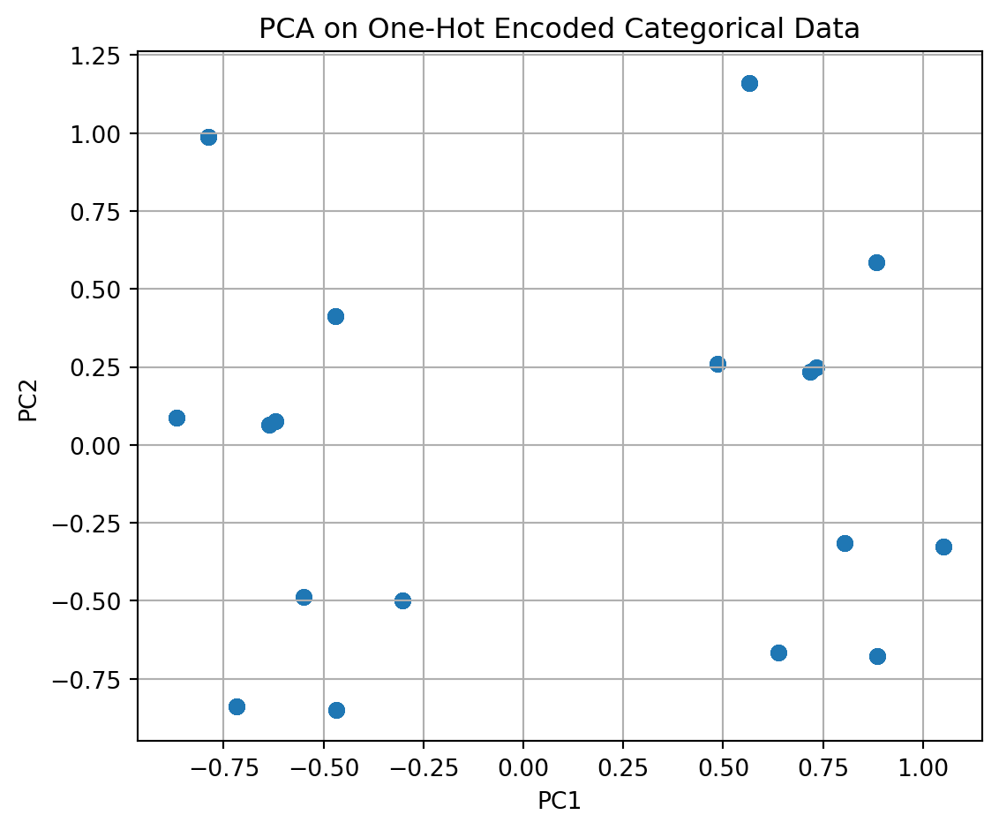
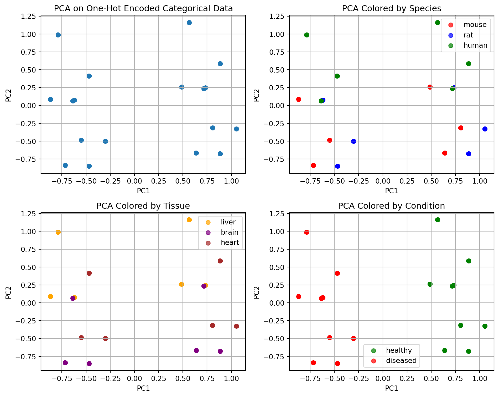
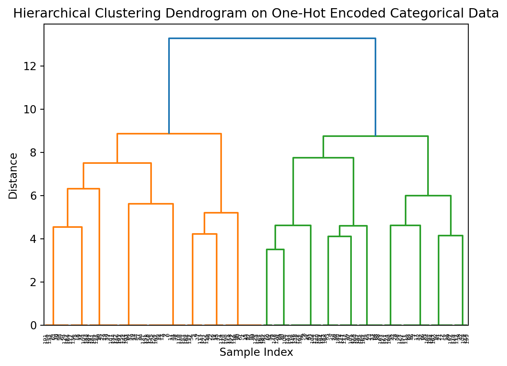
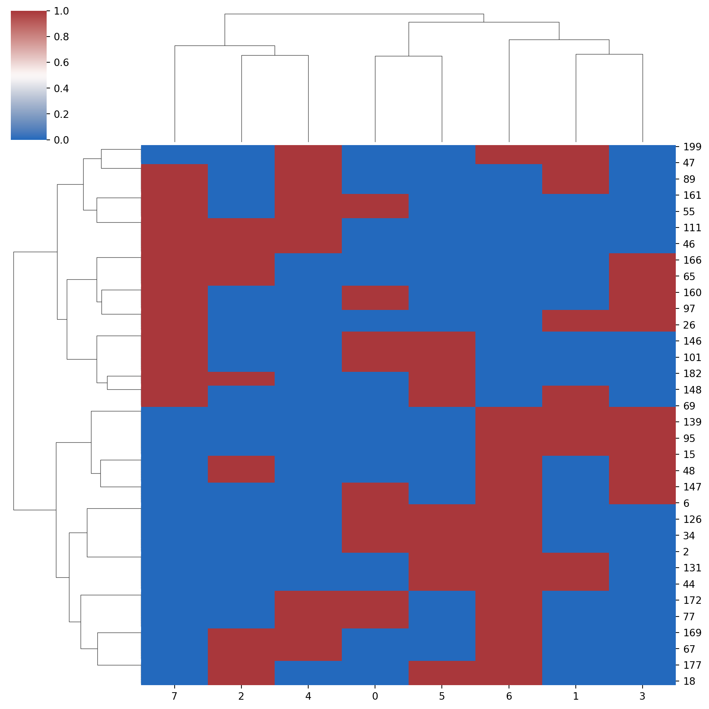
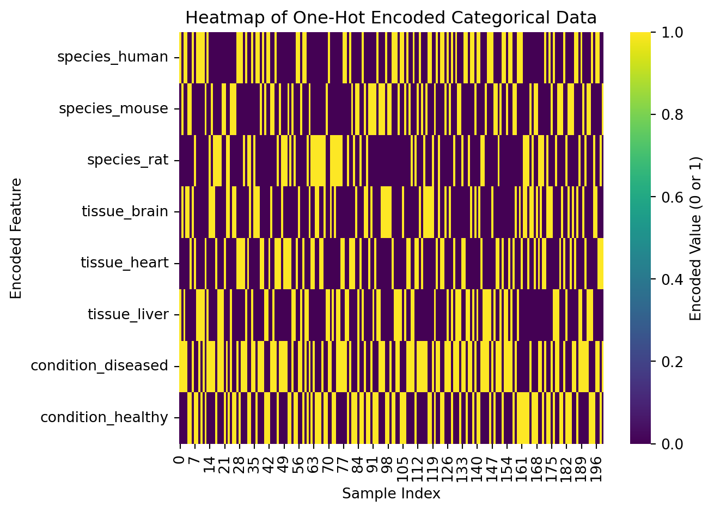

9 When PCA or tSNE might not work
Learning Objectives
- Understand real-world scenarios where unsupervised learning is applied
- Identify situations where PCA and other dimensionality reduction techniques may not be effective
9.1 When PCA may not work
9.1.1 Non-linear data
- Non-linearity: Data that lies on curved surfaces or when data has non-linear relationships.
- Single-cell data: Biological data where cell types form non-linear clusters in high-dimensional space
9.1.2 Categorical Features
- PCA may work poorly with categorical data unless properly encoded
- One-hot encoding categorical features can create sparse, high-dimensional data where PCA may not capture meaningful structure
9.2 Alternatives
9.2.1 t-SNE (t-Distributed Stochastic Neighbor Embedding)
- Best for: Non-linear dimensionality reduction and visualization
- Key parameter: Perplexity (try values 5-50)
- Use case: Single-cell data, biological expression data, any non-linear clustering
Tip
NOTE (IMPORTANT CONCEPT): Sometimes tSNE may not work as well! It is hard to predict which unsupervised machine learning technique will work best.
You just need to try a bunch of different techniques.
9.2.2 Hierarchical Clustering + Heatmaps
- Best for: Categorical data and understanding relationships between samples
- Use case: When you want to see how samples group together based on multiple features
9.2.3 Demonstrating how PCA or tSNE may not work well
- Generate synthetic biological expression data: matrix of 200 samples × 10 genes, where Gene_1 and Gene_2 follow a clustering (four corner clusters) and the remaining genes are just Gaussian noise. You can see from the scatter of Gene_1 vs Gene_2 that the true structure is non-linear and not aligned with any single variance direction: PCA (or tSNE) may fail to unfold these clusters into separate principal components.
- Perform PCA on this data
from sklearn.decomposition import PCA
import matplotlib.pyplot as plt
# Apply PCA
pca = PCA()
pcs = pca.fit_transform(df) # where df is a dataframe with your data
# Scatter plot of the first two principal components
plt.figure()
plt.scatter(pcs[:, 0], pcs[:, 1])
plt.xlabel('PC1')
plt.ylabel('PC2')
plt.title('PCA on Synthetic Biological Dataset')
plt.show()
- Let us try tSNE on this data
from sklearn.manifold import TSNE
import matplotlib.pyplot as plt
tsne = TSNE()
tsne_results = tsne.fit_transform(df)
# plot
plt.figure()
plt.scatter(tsne_results[:,0], tsne_results[:,1])
plt.xlabel('t-SNE component 1')
plt.ylabel('t-SNE component 2')
plt.title('t-SNE on Synthetic Biological Dataset')
plt.show()
- What if we try different values of perplexity?

What if data has categorical features?
- PCA may not work if you have categorical features
For example, if you have data that looks like this ….
species tissue condition
0 human liver diseased
1 mouse brain diseased
2 human liver diseased
3 human brain diseased
4 mouse brain healthy
- We can split by disease/healthy, or other features.

- Hierarchical clustering
Recall:
Leaves: Each leaf at the bottom of the dendrogram represents one sample from your dataset.
Branches: The branches connect the samples and groups of samples. The height of the branch represents the distance (dissimilarity) between the clusters being merged.
Height of Merges: Taller branches indicate that the clusters being merged are more dissimilar, while shorter branches indicate more similar clusters.
Clusters: By drawing a horizontal line across the dendrogram at a certain distance, you can define clusters. All samples below that line that are connected by branches form a cluster.
In the context of your one-hot encoded categorical data (species, tissue, condition), the dendrogram shows how samples are grouped based on their combinations of these categorical features.
Samples with the same or very similar combinations of categories will be closer together in the dendrogram and merge at lower distances.
The structure of the dendrogram reflects the relationships and similarities between the different combinations of species, tissue, and condition present in your synthetic dataset.
from scipy.cluster.hierarchy import dendrogram, linkage
from matplotlib import pyplot as plt
import seaborn as sns
# Assume 'encoded_data' exists from the previous one-hot encoding step
linked = linkage(y = encoded_data,
method = 'ward',
metric = 'euclidean',
optimal_ordering=True
)
# plot dendrogram
plt.figure()
dendrogram(linked,
orientation='top',
distance_sort='descending',
show_leaf_counts=True)
plt.title('Hierarchical Clustering Dendrogram on One-Hot Encoded Categorical Data')
plt.xlabel('Sample Index')
plt.ylabel('Distance')
plt.show()
# or use sns.clustermap()
sns.clustermap(data=encoded_data,
method = "ward",
metric = "euclidean",
row_cluster = True,
col_cluster = True,
cmap = "vlag"
)

- Heatmaps
Heatmaps are a great way to visualize data and clustering
import seaborn as sns
import matplotlib.pyplot as plt
# Assume 'encoded_df' exists from the previous one-hot encoding step
plt.figure()
sns.heatmap(encoded_df.T, cmap='viridis', cbar_kws={'label': 'Encoded Value (0 or 1)'}) # Transpose for features on y-axis
plt.title('Heatmap of One-Hot Encoded Categorical Data')
plt.xlabel('Sample Index')
plt.ylabel('Encoded Feature')
plt.tight_layout()
plt.show()
9.3 Summary
Key Points
- PCA or tSNE are not magic bullets and may not work all the time